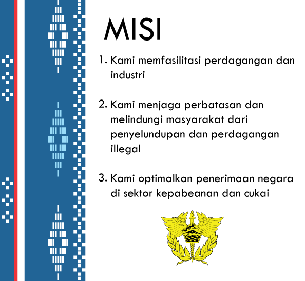

Sejarah
CUSTOMS (Instansi Kepabeanan) di mana pun di dunia ini adalah suatu organisasi yang keberadaannya sangat essensial bagi suatu negara, demikian pula dengan Direktorat Jenderal Bea dan Cukai (Instansi Kepabeanan Indonesia) adalah suatu instansi yang memiliki peran yang cukup penting pada suatu negara.
Bea dan Cukai (selanjutnya kita sebut Bea Cukai) merupakan institusi global yang hampir semua negara di dunia memilikinya. Bea Cukai merupakan perangkat negara “konvensional” seperti halnya kepolisian, kejaksaan, pengadilan, ataupun angkatan bersenjata, yang eksistensinya telah ada sepanjang masa sejarah negara itu sendiri. Fungsi Bea Cukai di Indonesia diyakini sudah ada sejak zaman kerajaan dahulu, namun belum ditemukan bukti-bukti tertulis yang kuat. Kelembagaannya pada waktu itu masih bersifat “lokal” sesuai wilayah kerajaannya. Sejak VOC masuk, barulah Bea Cukai mulai terlembagakan secara “nasional”. Pada masa Hindia Belanda tersebut, masuk pula istilah douane untuk menyebut petugas Bea Cukai (istilah ini acapkali masih melekat sampai saat ini). Nama resmi Bea Cukai pada masa Hindia Belanda tersebut adalah De Dienst der Invoer en Uitvoerrechten en Accijnzen (I. U & A) atau dalam terjemah bebasnya berarti “Dinas Bea Impor dan Bea Ekspor serta Cukai”. Tugasnya adalah memungut invoer-rechten (bea impor/masuk), uitvoer-rechten (bea ekspor/keluar), dan accijnzen (excise/ cukai). Tugas memungut bea (“bea” berasal dari bahasa Sansekerta), baik impor maupun ekspor, serta cukai (berasal dari bahasa India) inilah yang kemudian memunculkan istilah Bea dan Cukai di Indonesia. Peraturan yang melandasi saat itu di antaranya Gouvernment Besluit Nomor 33 tanggal 22 Desember 1928 yang kemudian diubah dengan keputusan pemerintah tertanggal 1 Juni 1934. Pada masa pendudukan Jepang, berdasarkan Undang-undang Nomor 13 tentang Pembukaan Kantor-kantor Pemerintahan di Jawa dan Sumatera tanggal 29 April 1942, tugas pengurusan bea impor dan bea ekspor ditiadakan, Bea Cukai sementara hanya mengurusi cukai saja. Lembaga Bea Cukai setelah Indonesia merdeka, dibentuk pada tanggal 01 Oktober 1946 dengan nama Pejabatan Bea dan Cukai. Saat itu Menteri Muda Keuangan, Sjafrudin Prawiranegara, menunjuk R.A Kartadjoemena sebagai Kepala Pejabatan Bea dan Cukai yang pertama. Jika ditanya kapan hari lahir Bea Cukai Indonesia, maka 1 Oktober 1946 dapat dipandang sebagai tanggal yang tepat.
Berdasarkan Peraturan Pemerintah Nomor 51 tahun 1948, istilah Pejabatan Bea Cukai berubah menjadi nama menjadi Jawatan Bea dan Cukai, yang bertahan sampai tahun 1965. Setelah tahun 1965 hingga sekarang, namanya menjadi Direktorat Jenderal Bea dan Cukai (DJBC).
Tugas Pokok dan Fungsi
Tugas
Direktorat Jenderal Bea dan Cukai berada di bawah dan bertanggung jawab kepada Menteri Keuangan dan dipimpin oleh Direktur Jenderal Bea dan Cukai.
Direktorat Jenderal Bea dan Cukai mempunyai tugas menyelenggarakan perumusan dan pelaksanaan kebijakan di bidang pengawasan, penegakan hukum, pelayanan dan optimalisasi penerimaan negara di bidang kepabeanan dan cukai sesuai dengan ketentuan peraturan perundang-undangan.
- Perumusan kebijakan di bidang penegakan hukum, pelayanan dan pengawasan, optimalisasi penerimaan negara di bidang kepabeanan dan cukai;
- Pelaksanaan kebijakan di bidang pengawasan, penegakan hukum, pelayanan dan optimalisasi penerimaan negara di bidang kepabeanan dan cukai;
- Penyusunan norma, standar, prosedur, dan kriteria di bidang pengawasan, penegakan hukum, pelayanan dan optimalisasi penerimaan negara di bidang kepabeanan dan cukai;
- Pemberian bimbingan teknis dan supervisi di bidang pengawasan, penegakan hukum, pelayanan dan optimalisasi penerimaan negara di bidang kepabeanan dan cukai;
- Pelaksanaan pemantauan, evaluasi, dan pelaporan di bidang pengawasan, penegakan hukum, pelayanan dan optimalisasi penenmaan negara di bidang kepabeanan dan cukai;
- Pelaksanaan administrasi Direktorat Jenderal Bea dan Cukai; dan
- Pelaksanaan fungsi lain yang diberikan oleh Menteri Keuangan.
Visi
Menjadi Institusi Kepabeanan dan Cukai Terkemuka di Dunia.
Visi DJBC mencerminkan cita-cita tertinggi DJBC dengan lebih baik melalui penetapan target yang menantang dan secara terus-menerus terpelihara di masa depan.
Misi

- Kami memfasilitasi perdagangan dan industri;
- Kami menjaga perbatasan dan melindungi masyarakat Indonesia dari penyelundupan dan perdagangan illegal; dan
- Kami optimalkan penerimaan negara di sektor kepabeanan dan cukai.
Fungsi Utama
- Meningkatkan pertumbuhan industri dalam negeri melalui pemberian fasilitas di bidang kepabeanan dan cukai yang tepat sasaran;
- Mewujudkan iklim usaha dan investasi yang kondusif dengan memperlancar logistik impor dan ekspor melalui penyederhanaan prosedur kepabeanan dan cukai serta penerapan sistem manajemen risiko yang handal;
- Melindungi masyarakat, industri dalam negeri, dan kepentingan nasional melalui pengawasan dan/atau pencegahan masuknya barang impor dan keluarnya barang ekspor yang berdampak negatif dan berbahaya yang dilarang dan/atau dibatasi oleh regulasi;
- Melakukan pengawasan kegiatan impor, ekspor dan kegiatan di bidang kepabeanan dan cukai lainnya secara efektif dan efisien melalui penerapan sistem manajemen risiko yang handal, intelijen, dan penyidikan yang kuat, serta penindakan yang tegas dan audit kepabeanan dan cukai yang tepat;
- Membatasi, mengawasi, dan/atau mengendalikan produksi, peredaran dan konsumsi barang tertentu yang mempunyai sifat dan karakteristik dapat membahayakan kesehatan, lingkungan, ketertiban, dan keamanan masyarakat melalui instrumen cukai yang memperhatikan aspek keadilan dan keseimbangan; dan
- Mengoptimalkan penerimaan negara dalam bentuk bea masuk, bea keluar, dan cukai guna menunjang pembangunan nasional.